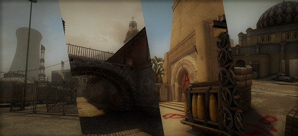
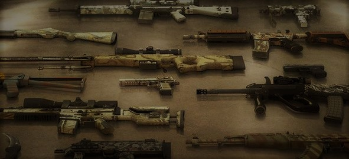
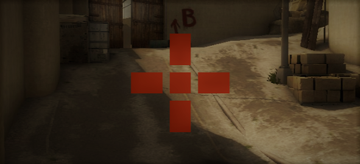

<ion-header>
 
    <ion-title>
      CSGO Center
    </ion-title>
  
</ion-header>


  <ion-content class="card-background-page backcol">
    <ion-card navPush="MappoolPage">
      
      <div class="card-title">MAP-POOL</div>
      <div class="card-subtitle">8 official maps</div>
    </ion-card>
  
    <ion-card navPush="WeaponSidePage">
      
      <div class="card-title">WEAPONS</div>
      <div class="card-subtitle">64 weapons</div>
    </ion-card>
  
    <ion-card navPush="SensitivityCsgoPage">
      
      <div class="card-title">SENSITIVITY</div>
      <div class="card-subtitle">Sensitivity calculator</div>
    </ion-card>

  
  </ion-content>

  
